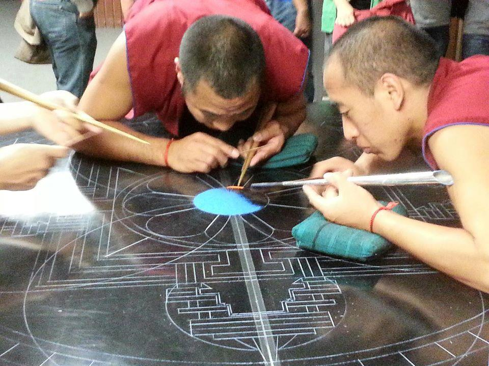
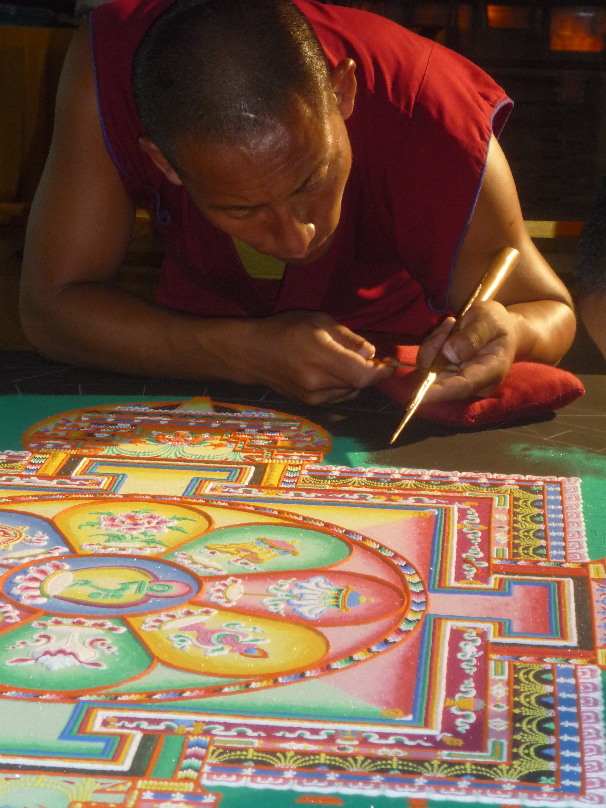

Elaboración del Mandala de la compasión
The Mystical arts of Tibet
A lo largo de su creación, los monjes vierten millones de granos de arena de embudos metálicos tradicionales llamados chakpur. Sobre una mesa de aproximadamente cinco pies por cinco pies de tamaño y la toma de tres a cinco días de trabajo.
1 Ceremonia de Inauguración del Mandala
Lugar: Biblioteca segundo piso.
Horario: Lunes 15 de Octubre de 12:30 a 14:30 hrs.
- 12:30 a 13:30 Montaje del evento (mesa, mandala, altar, mesa de artesanías) (Adentro de Biblioteca)
- 13:30 a 13:35 Presentación de las Artes místicas del Tibet
- 13:35 a 13:40 Explicación de la ceremonia
- 13:40 a 14:30 Música y cantos sagrados interpretados por los monjes Dibujo de las líneas del Mandala
2Elaboración del Mandala
Lugar: Biblioteca segundo piso.
Horario: Del lunes 15 al jueves 18 de Octubre
- Lunes: de 14:030 a 18:00 hrs.
- Martes: de 9:00 a 18:00 hrs.
- Miércoles: de 9:00 a 18:00 hrs.
- Jueves: de 9:00 a 16:00 hrs.

3 Ceremonia de clausura del Mandala
Lugar: Biblioteca segundo piso.
Horario: Jueves 18 de Octubre de de 16:00 a 17:30 hrs.
-
Terminación del Mandala.
Los monjes concluyen su creación del Mandala con una ceremonia de consagración. Esta ceremonia de gran colorido y de sumo interés es abierta al público. -
Desmontaje del Mandala.
Durante la ceremonia de clausura, los monjes desmontan e l Mandala, barriendo la arena de colores para simbolizar la impermanencia de todo lo que existe. Cuando así lo solicite, la mitad de la arena se distribuye al público como una bendición para la salud y la curación. -
Dispersión de la arena
La arena restante es llevada en procesión por los monjes, acompañados de invitados, a un cuerpo de agua que fluye, donde se vierte ceremonialmente para dispersar las energías curativas de la Mandala en todo el mundo.
